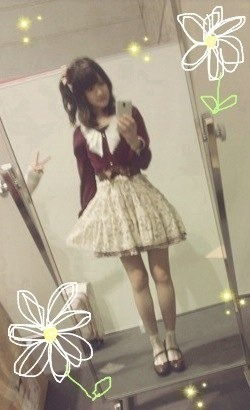
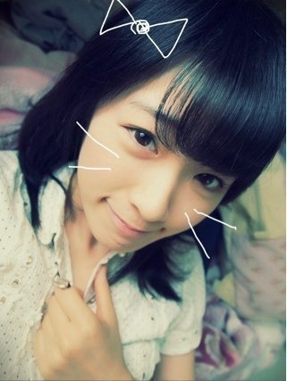

2012/0923Sun（´-`）.｡oO(かずみん×99
いつも応援ありがとうございます！
昨日は名古屋の全国握手会
そして今日は大阪の個別握手会
がありました＼(^o^)／
来てくださったみなさん、
ありがとうございました！
公演の感想や番組の感想など
沢山の温かい言葉をいただけて
とても嬉しかったです(#^v^#)
みなさんの笑顔にも
とても癒されました\(//∇//)\
本当にありがとう！
今日は

こんな感じのコーデでした！
ブラウス→mimirdees
スカート→Amabel
最近Amabelにハマってます！
玲香とみゅうみゅうが日村さんに
買ってもらってた洋服のお店ですよ♪
ちなみに左にある手は
まいやんでーす！
---------
今日は乃木どこですね(*^^*)
私は起きてられるかな...笑
みなさんもぜひ見て下さいね〜♭.°
今日は短いけれどこの辺でっ( ´ ▽ ` )ﾉ
大好きなみなさま、
いつもありがとう。
それではお休みなさい...☆

2012/09/23 23:06


コメント(424)
二日間お疲れさま！
個別は4thまで我慢します。
かずみーーん(*^^*)
全握個別お疲れ様(*^^*)
行きたかったけど東京まで我慢(*_*)
二日連続疲れたよね((^^;
ゆっくり休んでね(^^;
乃木どこ見たよ！
やっぱりレッスンすごく頑張ったんだね…
みんな疲れてるのにそれをファンに見せないっていうのはすごい。
さすがプロだね(^^)d
写真若干ぶれてる(笑)
二枚目待受にしますw
それじゃあこの辺で！
今日はお疲れ様(*^^*)
明日も頑張ろう
愛羅武勇
やっほー
いわしだよー
お疲れ様！
乃木どこ見て更にかずみんつぼったw
東京全握は行くからねー
じゃあね
いわし
乃木どこ？見たよー
自己PRいささかアメージング！
お疲れさん！
乃木どこの自己PRおもしろかったよ(*^^*)
来週も楽しみ！
おやすみ～☆
握手会に行きたかったなーo(^o^)o!!
俺涙目(T^T)
横浜までお預けや…。
乃木どこ?見ました!!
めちゃくちゃ笑わせてもらいました(≧∀≦)
へばっまずな(^-^)/~~
俺もアメイジング使っていいですか？
就職決まったら
必ず会いに行くからね♪(^з^)-☆
あとちょっとやから(泣)
一実の自己PRまぢ最高なんだけど
生で見たかった…
また１週間頑張れそうだ！！！
ポジティブ～
いず★みん
初コメです！
乃木どこ見たよ！
かずみんやっぱおもしろくて好きだわー！（笑）
今日もお疲れ様！おやすみ！(¦3[▓▓]z Z Ｚ
服装秋っぽくてかわいい！
乃木どこみたよ！
かずみんの自己PR 見れた！
そりゃ好きになりますわ！
カナは大変みたいだったけど(笑)
大阪個握お疲れさま！！
コーデかわいいな！
髪型もいいね！！！
乃木どこ
自己PR流石だったね！！
名古屋と大阪の握手会お疲れ様‼
自分も早くかずみんと握手したい(>_<)
まいやんか(。・ω・。)
一瞬心霊写真かと思ったわ。
握手会お疲れさま＼(^O^)／
めちゃくちゃ行きたいけど受験がぁ(´；ω；｀)
いつか絶対行きますっ!!
かずみちゃん、昨日の名古屋全握、本日の大阪個握
お疲れ様でした。流石に足パンパンでは？
僕は、昨日名古屋全握に参加しました。
朝、タクシーで名古屋駅から会場まで飛ばして、430から
高山一実Familyの北海道遠征の方と並んだ。
でも僕は、Ｂエリアだったくじ運無しwww
やっぱり、ライブはかずみんに認識して貰って応援したい
から頑張ったのだけど、残念です！！
全握だし聞きたいことも上手く聞けなかったな！
東京公演のことも話してあげたかったし、聞きたかった
のだけどね！とりま、9/29の名古屋の個握で、聞きます。
今日の個握は、高山一実Familyの関西組みが頑張って
くれたから嬉しかったです。
ろってぃ、あしゅ、ひめたんも良い笑顔でした。
でも、朝からあしゅは元気がない様に感じたよ。
自分も一時間くらいしか寝てないので、目が回って
いたしねwww
ひめたんに東京公演で、一番学んだ事って！って
質問したら、絆って答えてくれました。
たいしたものだだね、即答に近かったから！
ろってぃも即答してくれたし、メンバ皆本当に成長
したんだね！身に沁みて感じたからこそ即答できたの
だと思うし、本当に「乃木坂46」にとって良い公演
だったって思います。
途中で、あしゅが具合悪くなったのを、かずみんがファン
に頭下げていたのが印象的、おねーさんだったし、
たいしたものだと、思ったよ。かずみん流石だね！！
来週の個別も2部と3部にお邪魔します。
今度は、東京の高山一実Familyと！！
枚数2人とも持ってるから覚悟ですよんwww
握手会は、ファンとの交流できる唯一の場だからね
お互いに元気を貰って、明日からの糧にしたいね！！
でも、昨日僕を認識してました？ハンネ1度も言って
もらってなかったから、忘れたのかと...
今も思ってます。はい、冗談ですwww
でも、やはり言ってもらいたいものです。。。
今日は、乃木どこ？楽しみです。
ほなら、またね！！
乃木どこ？初日の模様よかったです。
9/9 1300 観れたので幸せでしたよ！！
香川から来たって言ったヤツ(^^)/
また行くねー！！
かずみん
面白かった(笑)
私服いいですねー(*´`)
乃木どこのかずみんの自己PRおもしろかったー(^_^)
おやすみなさい☆GOODNIGHT☆
かずみーん♪
初コメですが、よろしくです(^o^ゞ
コーデめちゃかわいい
サイコー(*^^*)
応援してます(^^)
ファイトかずみーん♪
今日の乃木どこ見ましたよ♪
かずみんの自己PR...最高でした(≧∇≦)笑
また今度公演があったら生で見たいです*\(^o^)/*
2日とも不参加でしたが、来週の名古屋・個握は行きます～☆
もしかして、けっこうお高めの服なんでしょうか？！
ゆーたんなう
名古屋大阪お疲れ！！
名物たくさん食べれたかな？
てかサイド結び？？
凄く可愛いね(^.^)b
ANGEL降臨だ(●^ー^●)
明日からもお互いいささかガジがんばろうぜよ！
今日も1日お疲れちゃん
ぢゃぁ
(一実o^∀^o46)
↑
これ大事
秋コーデの一実さん、素敵でしたぁ。
名古屋も行きますよ～！
今日も世界一可愛いね！
名古屋、大阪握手会参加出来なくって
ごめんね(>_<)
ぱわぁ送ってたよ(oﾟ▽ﾟ)o
幕張の全握まで長いよぉ｡ﾟ(ﾟ´Д｀ﾟ)ﾟ｡
早く会いたいわぁ(v_v)
私服もお上品で素敵！似合ってるね！
次でブログ100回だね(^_-)-☆
なんかスペシャルな回にしてぇ(^ｰ^)
らびゅ！
そして何回も行ってごめんなさい笑
久々にかずみんに会えて楽しかった！
今日の髪形と服めっちゃ似合っててかわいかったでー！
また会いに行くな！
じゃあ明日もお互い頑張りましょー！
個握に１回行きたい。
乃木どこ？見たよ。
自己紹介おもしろいね。
ウケ狙ってるわけではないのだろうけど、なぜか笑ってしまう。苗字が高山でもＯＫだぜ。
歌声としゃべる声ホントに違うんだね。
というか結構違うね。
今日は七瀬レーンから
毎ループ喋りかけたけど
相手してくれて嬉しかった‼
次は券買います(^ ^;)笑
かずみん こんばんは( ´ ▽ ` )ﾉ
握手会お疲れ様ぁ
私服写真ありがとね♪
なかなか握手会まで行けない自分としては
写真でだけでも雰囲気味わえて嬉しい(*^o^*)
今夜は乃木どこ！
でも映らないんよね(>_<)
やからリアルタイムでは無理やけど
ネットであとからしっかりチェックするでぇ！！
感想は次回のブログのときにコメントするね(((o(*ﾟ▽ﾟ*)o)))
最後の写真キティちゃんみたいやね！(◎_◎;)
めっちゃかわいい\(//∇//)\
一日お疲れ様
ゆっくり休んで疲れとってね( ^_^)/~~~
にしても白石さんってどーにでも写りたいひとなんですな(^_^;))))))コソコソ…(・∀・)イイ
貪欲と言いますか(笑)そーか今日の名古屋ってやすすグループ大集結だったんでげすね
＞°))))彡(￣◇￣;)
そうそう最近よんだ『ダメ人間』(著・鈴井貴之)ってのがまあ良いのかいこんな赤裸々でって
感じで面白かったでげす(〃⌒ー⌒〃)∫゛ヾ(´ω｀＝´ω｀)ノ
昨日、そして今日は本当にありがとう。
今日の服、髪型、めっちゃかわいかった！
たくさんの人が握手会来てくれるようになって良かったね。
そのぶん、前みたいに一実さんに会いに行けんようになったのは寂しいけど。
また名古屋も行くけんが、体に気をつけて頑張ってね。
初こめです＼(^o^)／
来週末の名古屋握手会行きます←
楽しみです＼(^o^)／
画像可愛すぎて←
おやすみなさい♪
あつや
千秋楽夜のかずみん思い出しちゃって爆笑だった(￣ー￣)(笑)
坂本龍馬とサムライのトークもまたやって欲しかったなあ(^q^)
からのAmazing Graceはやっぱりギャップが素敵すぎた(*´Д｀)
私服、めっちゃかわいい！！
まだ握手会行けてないから次の幕張まで楽しみにしてます((o(´∀｀)o))ﾜｸﾜｸ
じゃ、おやすみーんかずみん(*^^*)。
名前覚えててくれて有り難う♪
本当に嬉しいです♪
次は4thの握手会＆ライブ＆その他諸々、絶対かずみんに会いに行くよ♪
ありがとうございました♪
握手会お疲れ様^^
大学になったら俺も遠征とかしたいなぁ（笑）
今日のコーデめっちゃ可愛いやん(*≧ω≦*)
ふわふわしててかずみんらしいよ
昨日、今日YONEX OPEN JAPANっていうバドミントンのプロの試合の準決勝と決勝見に行ったんだけどマジやばかった！
今バドミントンしたくてたまらない！笑
見ただけなのにちょっと強くなった気分というありがちなパターン(｡･д･)ﾉ
でもそのせいで疲れて寝ちゃって....
だがしかしbut奇跡的に乃木どこ2分前に起きて見たぜ～(σ≧∀≦)σ･･--☆
持ってるな俺（笑）
乃木どこやばかったねw
自己紹介もどんぐりじゃないパターンみれたし、面白かったwww
なんか時が経つにつれてしゃべり方の破壊力が増してる気がするwwwww
まぁそんなかずみんが大好きです
早く会いたいよ～( ´ ▽ ` )ﾉ
ほいじゃあ！
また100回記念のブログで！！！
☆☆☆(なお・ω・やん)☆☆☆
私服オシャレで可愛い！
でわおやすみなさい！
まぁさんです
名古屋 大阪 お疲れ様
めちゃ楽しそう
いいな いいな
行けなかったのが残念
かずみさんの安くて良い物精神より
ちょっとオシャレになってきたのカナ(笑)
でもめちゃ似合ってて可愛いよ
疲れただろうから、ゆっくりやすんでね
応援してます
かずみん、その服装かわいいぞ。
まいやんもお茶目だが。
あっ、乃木どこ観たよ。自己PR良かったよ。ほんとPRだなあと思った。らしさや良さが出てて凄く良かったと思う。
全握と個別お疲れ様でした(`･ω･´)
個別の相変わらず私服可愛い(´□｀)
個人的に赤い服のほうが好きです(笑)
来週の名古屋個別楽しみにしてます！
----------
今日の乃木どこ･･･
公演行ってないから始まる前は少しストレスだったけど
かずみんのPR見れてテンション高山＼(^o^)／
面白かったよｗｗｗｗ
あら、写真可愛い(´□｀)
個別いいなー行きたかった(´･ω･)
名古屋楽しみにしてます！
明日からもお仕事頑張ってね。
ではでは
せいたん推しの３２６☆彡です。
いつもブログは見てるよ。
コメントはあんまりしてないけど…
昨日は名古屋の全国握手会
そして今日は大阪の個別握手会
お疲れさまでした。＼(^o^)／
初の名古屋全握参加で
かずみんレーンにお邪魔したよ(^O^)／
また行った時にはよろしくお願いします。
個別の私服写メ超可愛いんだけど！
かずみんの面白さは、乃木坂１だよ＼(^o^)／
３２６☆彡
全握&個握お疲れさまー(*´ω｀*)
今日は2部に一回しか行ってないけど
元気貰えた！！
長いネクタイしてたメガネ
覚えてるかな？わら
かずみんの笑顔最高！！
めっちゃ元気になれる
乃木どこも見たで！
実際見に行ってないけど
途中うるうるしながら見てた。
凄い環境？で頑張ってたんやなって思ったら
うるうるしてもた！わら
最近涙腺弱くなった気する...
かずみんの自己PR！
面白かった
ほんでやっぱり最高やなっておもった。
大阪全握ないねんな(´・c_・`)
つらたん...
次は4thのイベントになるんかな？
会えるの
それまで乃木どこで我慢するわ！
ではそろそろ寝ます
おやすみ(-_-).。oO
今日は最高の１日でした！
ありがとう(*^^*)
かずみさん…
乃木どこおもろすぎた…
公演に行けんかったぶん家で笑いました。
感動の涙からかずみの笑いにw
握手しにいきたくなった笑
さかちょん
今日はほんと楽しかった！
ゆっくり話すのはやっぱり個別だね♪
まとめ出しの時色々な話できてよかった(*^^*)
また来週の名古屋で話そう^^
今日私服ほんと似合ってて可愛かった♪
次は100回目のブログだね！
更新楽しみにしてる！
じゃあ明日から大学なんでガジ頑張ります(笑)
かずみんもファイティーン☆
さすがアイドル(^o^)/
いつもかずみんのお陰で
頑張れてます(ToT)
ありがとうo(^o^)o
かずみーーーん
─=≡Σ((( つ•̀ω•́)つ♡
昨日今日おつかれさま！
あたしも初握手遠征楽しかった！！
ライブもめっちゃ沸けたし(*^o^*)♪♪
せっかちのソロパート聞きたかったあ
握手もめーーーっちゃ楽しかった！
髪の毛褒めてもらったし/////
実はかなりん意識してます。
(嘘です、かなりんごめん（笑）)
でもかなりんにも可愛い言われちゃった///←
いっつも話すことごちゃごちゃしちゃってごめんね←
安定のさのぞうさんと連番いぇーーいっ♡♡
名古屋個別ほんとごめんね、(´・ω・｀)
ゆっくりお話するつもりだったんだけど……
東京まで長いよぉおおおおおお(´・ω・｀)
話すことたっくさんたっくさん考えとくね！
てか、私服かわいい////
もう寒くなってきたもんね～、
あっ！服の話もしようね！ガールズトーク♡
またかずみんとお揃いのきたいなぁ(*^o^*)
移動とか立ちっぱなしで疲れたと思うからゆっくり休んでね！
あ、ホテルエピソードあってら次教えて～！
それじゃあ、またねんっ♡
コメントする